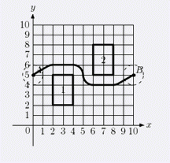
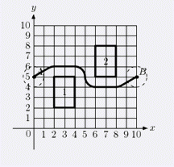

在平面上有n个平行于坐标轴的矩形障碍物, 现需要将一个半径为r的圆从A点移动到B点. 请计算最短路. (n <= 30) 
| F.A.Qs | Home | Discuss | ProblemSet | Status | Ranklist | Contest | 入门OJ | ModifyUser Xeonacid | Logout | 捐赠本站 |
|---|
| F.A.Qs | Home | Discuss | ProblemSet | Status | Ranklist | Contest | 入门OJ | ModifyUser Xeonacid | Logout | 捐赠本站 |
|---|
在平面上有n个平行于坐标轴的矩形障碍物, 现需要将一个半径为r的圆从A点移动到B点. 请计算最短路. (n <= 30) 
本题是多组数据，第一行一个整数T(T<=30)表示数据组数，接下来依次描述每一组数据，每组数据第一行两个整数r,n(1<=r<=100,0<=n<=30)如上所述。第二行包含4个整数xA,yA,xB,yB，(xA,yA)表示起点A坐标，(xB,yB)表示终点B坐标。接下来n行每行4个整数x1,y1,x2,y2，(x1,y1)表示矩形障碍物左下角坐标，(x2,y2)表示矩形障碍物右上角坐标。 矩形不会互相覆盖或接触，起点的坐标是合法的，即一开始不会与任何矩形相交（但是可能和某些矩形相切）
每组数据输出一行，一个实数，输出保留6位小数，即从A到B不穿过矩形的最短路，如果不存在最短路请输出no solution。